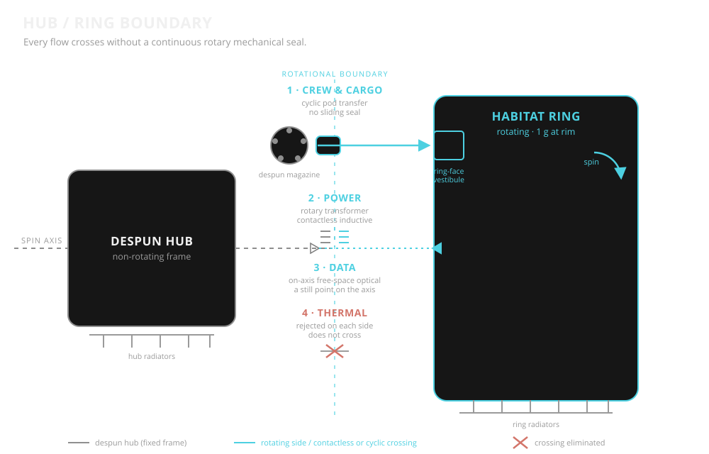

The hub/ring boundary is the interface between Aegis Station's despun central hub and its three
co-rotating habitat rings. Everything the station needs to move — crew, cargo, water, power, data,
heat — crosses this boundary. The architectural principle is singular: no continuous
rotary mechanical interface carries a life-critical flow. No slip rings. No continuous
rotary fluid seals. Every crossing is either contactless, cyclic, or eliminated entirely by
distributing the function across both sides.

Schematic of the boundary (not to scale). Crew & cargo cross as cyclic pods, power by a contactless rotary transformer, data by an on-axis optical link, and heat is rejected independently on each side — no continuous rotary seal in any path.
Continuous rotary mechanical interfaces — slip rings, brush assemblies, rotary fluid unions —
are the historically failure-prone elements of rotating space systems. Wear, contamination,
seal degradation, and single-point failure modes have driven substantial operational problems
on existing platforms. Aegis Station eliminates them at the hub/ring boundary.
Each flow across the boundary is handled by the mechanism best matched to its duty cycle:
Cyclic mechanical transfer for crew, cargo, and bulk fluids — carried by standardized pods through despun magazines and ring-face vestibules.
Contactless coupling for power and data — rotary transformers for power, free-space optical links for data.
Function distribution for thermal and selected utilities — heat is rejected on the ring directly; the ring carries its own independent services where doing so is cheaper than crossing the boundary.
The hub becomes an interface bus, not a utility umbilical. The rings are substantially autonomous
systems connected to the hub through a small number of well-characterized, well-behaved crossings.
2. Crew Crossings
Crew cross the boundary inside transit pods — pressurized, seat-equipped
vessels with independent life support, moved through a cyclic transfer mechanism that never
requires continuous relative motion between a sealed pressurized volume and a rotating structure.
Transit Pod
Common ~3.5 m external envelope; 4 crew nominal, 6 crew contingency evac load
Independent ECLSS with ~24-hour endurance at nominal load
Per-seat LEA-class pressure suits with umbilical-compatible interfaces
Manual hatch operation — no power, no comms, no software in the safety path
Pod long axis aligns with station spin axis; "floor" points outward from hub centerline
Despun Magazine
Disc carousel co-located with each ring face; diameter just exceeds hub outer wall
Five pod berths arrayed around rim, rotation axis parallel to station spin axis
Loads despun from hub-internal corridor; spins up to ring rate for transfer
Reaction wheels absorb spin-up/down torque; water ballast compensates partial-load asymmetry
Contactless relationship with ring during spin-up; no seal is slipping under pressure at any phase
Axial Transfer
At co-rotation, pod is pushed axially forward into a ring-face receptacle
Both sides are at the same radius and angular rate — the transfer is a simple linear motion in the rotating frame
No rotary fluid or gas seal is traversed; pressure mate occurs between two co-rotating surfaces
Mechanism is bidirectional for pod retrieval
Ring-Face Vestibule
Pressurized volume on the ring's inner (hub-facing) surface where pods mate
Crew disembark in low-g; take ring-internal lifts outward to the rim habitat level
Pod stays at the boundary; no pod traverses the ring's radial depth
Four vestibules per ring, distributed around the ring face for redundancy and walking-distance coverage
Sizing & Cadence
With a design complement of roughly 3,000–5,000 permanent crew distributed across three identical
rings, per-vestibule peak load is well within the capacity of 5-chamber magazines operating on a
scheduled ~15–20 minute cycle. Surge mode (~10 minute cycles) supports full-ring evacuation in
under two hours without relying on any single vestibule.
Crew Safety Layers
Layer
Function
Pressurized hub corridor & vestibule
Nominal shirtsleeve environment on both sides of the crossing
Pod hull & independent ECLSS
Sealed volume, hours of independent life support
LEA pressure suits, per seat
Pressure containment if both pressurized volumes fail
Manual egress & mechanical hatches
Power-independent exit to a pressurized refuge
3. Cargo & Bulk Fluids
Cargo crosses the boundary by the same pod form factor as crew, in a parallel
cargo-variant magazine at each ring. This eliminates continuous rotary fluid unions entirely —
bulk water, pressurant gas, and other fluids cross as sealed cartridges, not as flowing streams
through rotating plumbing.
Cargo Pod
Shared external envelope and transfer interface with passenger pod
Internal cradle accepts a single 45-tonne MTC, standard cargo modules, or outsize hardware
Pressurized or unpressurized per mission; active thermal for sensitive payloads
No life support; full internal envelope available for payload mass
Cargo Magazine
Mechanically identical to passenger magazine; parallel hardware per ring face
Scheduled independently of passenger cadence to avoid interference
Can carry a passenger pod in contingency if a passenger magazine is out of service
Bulk Fluid Transfer
Water for ring shielding arrives as sealed MTCs carried on cargo pods
Cartridges discharge inside the ring at pressure-equalized dry transfer interfaces
Empty cartridges return the same way for surface refill
Pressurant gas uses dedicated gas cartridges on the same transit path — no rotary gas union
What This Eliminates
No continuous rotary water line crossing the boundary
No pressurant gas rotary seal
No shared failure mode between fluid transfer and structural rotation
Fluid seal life is no longer a station-level reliability driver
4. Power Crossings
Power crosses the boundary via contactless inductive coupling — a rotary
transformer whose primary and secondary windings rotate relative to each other across a small
air gap. No brushes. No sliding contact. No wear item on the power path.
Primary Power Path
Rotary transformer at each ring interface; primary on hub, secondary on ring
High-frequency AC link; efficiency in the high 90s is achievable at scale
No contact means no contamination, no brush dust, no wear-limited service life
Ring-Mounted Generation
Each ring carries independent PV and storage sufficient for core life support and essential loads
Rotary-transformer path is primary; ring-mounted power is backup and peaking
Ring can survive a complete hub-power outage indefinitely on its own generation and storage
No Slip Rings
Slip rings and brush assemblies are excluded from the boundary architecture
Historic rotating-power problems (brush wear, contamination, arcing) do not exist here
Maintenance on the boundary power path is scheduled, not reactive
Fault Isolation
Primary and ring-local power are independent circuits with no shared fault domain
Transformer isolation inherently blocks common-mode faults between hub and ring buses
Loss of any single ring does not propagate to the hub or to other rings
5. Data Crossings
Data crosses the boundary via free-space optical links on the station spin axis.
The geometry is naturally favorable: an on-axis point is stationary in both the hub and ring
reference frames, so no mechanical rotation of the link itself is required.
On-Axis Optical
Redundant transceivers at the hub/ring interface, aligned along the station spin axis
Bandwidth and latency sufficient for all station operational and crew traffic
No EMI, no contact wear, no continuous rotary mechanical interface
Redundant Paths
Each ring carries multiple independent optical transceivers for fault tolerance
Low-rate RF backup for safing and initial reacquisition after outage
Optical fiber paralleling the crew transit path provides a wired redundant route
6. Thermal Crossings
Most station waste heat does not cross the boundary. Ring-generated heat is
rejected by ring-mounted radiators on the rotating structure. This eliminates the need for a
continuous rotary fluid coupling on a working thermal loop, which would otherwise be one of the
highest-duty-cycle and highest-consequence wear items on the station.
Ring-Side Rejection
Habitat thermal loads are handled entirely on the ring by ring-mounted radiators
Rotation geometry is compatible with radiator view factor management
No thermal working fluid crosses the boundary in the primary path
Hub-Side Rejection
Hub equipment heat is rejected on hub-mounted radiators, also without boundary crossing
Small hub/ring coupling only via air exchange through pressurized transit corridors — a known, benign path
7. Boundary Summary
Flow
Crossing Mechanism
Continuous Rotary Seal?
Crew
Cyclic pod transfer via despun magazine and ring-face vestibule
No
Cargo
Cyclic pod transfer via cargo magazine
No
Bulk water
Sealed MTCs carried as cargo pod payload
No
Pressurant gas
Sealed gas cartridges carried as cargo pod payload
No
Power
Rotary transformer (contactless inductive)
No
Data
On-axis free-space optical
No
Thermal
Rejected on each side independently
No
The hub/ring boundary carries every flow the station needs without a single continuous rotary
mechanical seal in any life-critical path. Cyclic transfers are bounded, well-characterized,
and maintainable. Contactless couplings have no wear items. Functions that can be distributed
across both sides are, removing the crossing entirely.
This page describes the boundary only. Ring-internal architecture, hub infrastructure, and
overall station design are addressed elsewhere in the program documentation.